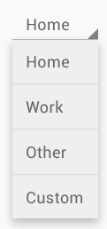
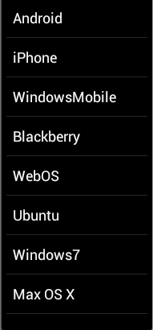
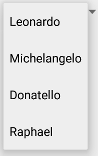

ListView
(link)

An ordered collection of selectable choices
android:id="@+id/theID" |
unique ID for use in Java code |
android:clickable="bool" |
set to false to disable the button |
android:entries="@array/array" |
set of options to appear in the list (must match an array in strings.xml) |
Spinner (link) 
A drop-down menu of selectable choices
// to handle events in Java code
Spinner spin = (Spinner) findViewById(R.id.theID);
spin.setOnItemSelectedListener(this);
...
android:id="@+id/theID" |
unique ID for use in Java code |
android:clickable="bool" |
set to false to disable the spinner
|
android:entries="@array/array" |
set of options to appear in spinner (must match an array in strings.xml) |
android:prompt="@string/text" |
title text when dialog of choices pops up |
Static lists

- static list: Content is fixed and known before the app runs.
- Declare the list elements in the strings.xml resource file.
- dynamic list: Content is read or generated as the program runs.
- Comes from a data file, or from the internet, etc.
- Must be set in the Java code.
String resources
- Declare constant strings and arrays in res/values/strings.xml:
<resources>
<string name="name">value</string>
<string name="name">value</string>
<string-array name="arrayname">
<item>value</item>
<item>value</item> <!-- must escape ' as \' in values -->
...
<item>value</item>
</string-array>
</resources>
- Refer to them in Java code:
- as a resource:
R.string.name,R.array.name - as a string or array:
getResources().getString(R.string.name),getResources().getStringArray(R.array.name)
- as a resource:
Spinner example

<!-- in res/values/strings.xml: -->
<resources>
<string name="choose_turtle">Choose a turtle:</string>
<string-array name="turtles">
<item>Leonardo</item>
<item>Michelangelo</item>
<item>Donatello</item>
<item>Raphael</item>
</string-array>
</resources>
<!-- in layout XML -->
<LinearLayout ...>
<Spinner ... android:id="@+id/tmnt"
android:entries="@array/turtles"
android:prompt="@string/choose_turtle" />
<TextView ... android:id="@+id/result" />
</LinearLayout>
List adapters
adapter: Helps turn list data into list view items.
- common adapters:
ArrayAdapter: items come from an array or listCursorAdapter: items come from a database query
- Syntax for creating an adapter:
ArrayAdapter<String> name = new ArrayAdapter<>(activity, layout, array);- the activity is usually this
- the default layout for lists is
android.R.layout.simple_list_item_1 - get the array/list by reading your file or data source of choice
- attach it by calling
setAdaptermethod ofListView
Adapter example
// create an adapter based on a list
ArrayList<String> myArray = new ArrayList<>();
myArray.add("Windows");
myArray.add("Linux");
myArray.add("Mac OS X");
ArrayAdapter<String> adapter = new ArrayAdapter<>(
this, android.R.layout.simple_list_item_1, myArray);
ListView list = (ListView) findViewById(R.id.mylist);
list.setAdapter(myAdapter);
Handling list events

- Lists don't use the
onClickevent. - Event listeners must be attached in Java, not XML.
- We must use Java anonymous inner classes.
- anonymous inner class: A shorthand syntax for declaring a small class without giving it an explicit name.
Event listener in Java
<!-- activity_main.xml -->
<Button ... android:onClick="mybuttonOnClick" />
<Button ... android:id="@+id/mybutton" />
// MainActivity.java
public void mybuttonOnClick() { ... }
Button button = (Button) findViewById(R.id.mybutton);
button.setOnClickListener(new View.OnClickListener() {
public void onClick(View v) {
// code to run when the button gets clicked
}
});
// this was the required style for event listeners
// in older versions of Android :-/
List events
- List views respond to the following events:
setOnItemClickListener(AdapterView.OnItemClickListener)- Listener for when an item in the list has been clicked.
setOnItemLongClickListener(AdapterView.OnItemLongClickListener)- Listener for when an item in the list has been clicked and held.
setOnItemSelectedListener(AdapterView.OnItemSelectedListener)- Listener for when an item in the list has been selected.
- Others:
onDrag,onFocusChanged,onHoveronKey,onScroll,onTouch, ...
List event example
public class MyActivity extends Activity {
@Override
protected void onCreate(Bundle savedInstanceState) {
...
ListView list = (ListView) findViewById(R.id.id);
list.setOnItemClickListener(
new AdapterView.OnItemClickListener() {
@Override
public void onItemClick(AdapterView<?> list,
View row, int index, long rowID) {
// code to run when user clicks that item
...
}
}
);
}
}
Item long click example
public class MyActivity extends Activity {
@Override
protected void onCreate(Bundle savedInstanceState) {
...
ListView list = (ListView) findViewById(R.id.id);
list.setOnItemLongClickListener(
new AdapterView.OnItemLongClickListener() {
@Override
public void onItemLongClick(AdapterView<?> list,
View row, int index, long rowID) {
// code to run when user clicks that item
...
}
}
);
}
}
- Notice that the code must change in all 3 places above!
List event alt. style
// you can make your activity itself be the listener
public class MyActivity extends Activity
implements AdapterView.OnItemClickListener {
@Override
protected void onCreate(Bundle savedInstanceState) {
...
ListView list = (ListView) findViewById(R.id.id);
list.setOnItemClickListener(this);
}
@Override
public void onItemClick(AdapterView<?> list,
View row, int index, long rowID) {
// code to run when user clicks that item
...
}
}
List event lambda with Java 8
- lambda: An anonymous "function" used as a parameter.
- New feature of Java 8.
public class MyActivity extends Activity {
@Override
protected void onCreate(Bundle savedInstanceState) {
...
ListView list = (ListView) findViewById(R.id.id);
list.setOnItemClickListener((list, row, index, rowID) -> {
// code to run when user clicks that item
...
});
}
}
Enabling Java 8 in your project
- in your Module (not Project)'s build.gradle file, add these (bold) lines, then click Sync Now to rebuild your project.
android {
...
defaultConfig {
...
jackOptions {
enabled true
}
}
buildTypes {
...
}
compileOptions {
sourceCompatibility JavaVersion.VERSION_1_8
targetCompatibility JavaVersion.VERSION_1_8
}
}
Changes to list data
If the data in the list changes, you must notify the list.
ArrayList<String> myArray = ...;
ArrayAdapter<String> adapter = ...;
ListView list = (ListView) findViewById(R.id.mylist);
list.setAdapter(myAdapter);
// data changes in some way
myArray.remove(0);
...
// need to notify the ListView of the change!
myAdapter.notifyDataSetChanged();
ListView methods (link)
| Method | Description |
|---|---|
getAdapter() |
returns array adapter |
getCount() |
# of items in list |
getItemAtPosition(index) |
return item at a given index |
getSelectedItem() |
item currently selected, if any |
getSelectedItemIndex() |
currently selected item's index |
performItemClick(view, index, id) |
simulate a click |
setAdapter(adapter) |
sets array adapter |
setFocusable(bool) |
whether items can be focused on |
setOnItemClickListener(L) |
attaching event listeners |
setOnItemLongClickListener(L) |
|
setOnItemSelectedListener(L) |
|
setSelection(index) |
sets which element is selected |
Custom list layout

- If you want your list to look different than the default appearance (of just a text string for each line), you must:
- Write a short layout XML file describing the layout for each row.
- Tell your
ArrayAdapterhow to supply the item text to each item.
Custom list layout XML
<!-- res/layout/mylistlayout.xml -->
<LinearLayout ... android:orientation="horizontal">
<!-- an icon on each list item -->
<ImageView ... android:id="@+id/list_row_image"
android:layout_width="100dp"
android:layout_height="100dp"
android:src="@drawable/smiley" />
<!-- the text of each list item -->
<TextView ... android:id="@+id/list_row_text"
android:textStyle="bold"
android:textSize="22dp"
android:text=""
android:background="#336699" />
</LinearLayout>
Custom list adapter code
ArrayList<String> myArray = ...; // load data from file
ArrayAdapter<String> adapter =
new ArrayAdapter<>(this,
R.layout.mylistlayout, // layout XML id
R.id.list_row_text, // item text id
myArray);
ListView list = (ListView) findViewById(R.id.mylist);
list.setAdapter(myAdapter);
Spinner event example
public class MainActivity extends Activity {
@Override
protected void onCreate(Bundle savedInstanceState) {
Spinner spin = (Spinner) findViewById(R.id.theID);
spin.setOnItemSelectedListener(
new AdapterView.OnItemSelectedListener() {
public void onItemSelected(AdapterView<?> spin,
View v, int i, long id) {
// code to run when an item is selected
}
public void onNothingSelected(AdapterView<?> parent) {
// empty
}
}
);
}
}